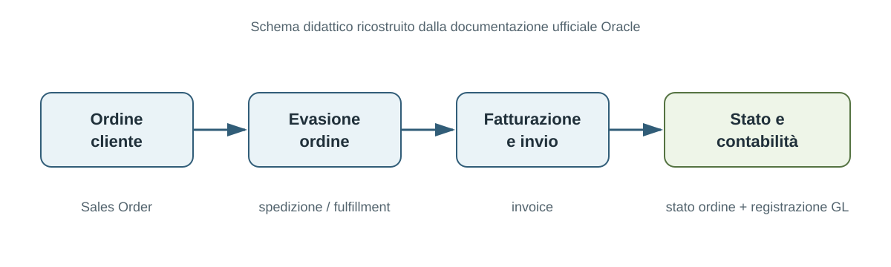
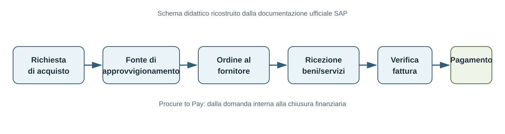

Indice del modulo
1 Il processo aziendale
Un processo aziendale è una sequenza strutturata e ripetibile di attività che consente all'organizzazione di raggiungere un obiettivo. Non è soltanto un elenco di operazioni: è un insieme coordinato di azioni, decisioni e passaggi che porta da una situazione iniziale a un risultato atteso.
Un processo può essere eseguito da persone, sistemi informativi o macchinari e, nella maggior parte dei casi, combina questi diversi esecutori. La sua utilità consiste nel rendere comprensibile come il lavoro viene svolto e in che modo le singole attività contribuiscono al risultato complessivo.
Ogni processo riceve uno o più input e li trasforma in output. Gli input possono essere dati, informazioni, documenti, materiali, richieste, autorizzazioni o altre risorse necessarie per iniziare e completare il lavoro. Gli output sono i risultati prodotti dal processo: un bene, un servizio, una decisione, un documento, una registrazione o un'informazione destinata a un altro soggetto.
Un output non è necessariamente il prodotto venduto al cliente finale. Può essere anche un risultato intermedio che alimenta un processo successivo. Per esempio, l'ordine registrato dall'ufficio vendite può diventare l'input per la verifica amministrativa, per la preparazione della merce e per la pianificazione della consegna.
Il processo è orientato a uno scopo. Le sue componenti principali possono essere osservate attraverso queste domande:
- Obiettivo: perché il processo esiste e quale risultato deve rendere possibile?
- Attività: che cosa deve essere fatto per raggiungere il risultato?
- Ruoli: chi è responsabile delle diverse parti del lavoro?
- Regole: quali condizioni, vincoli o criteri devono essere rispettati?
- Indicatori: come si verifica se il risultato è raggiunto con tempi, costi e qualità accettabili?

Un esempio concreto è il processo APQC Manage customer service problems, requests, and inquiries. Il diagramma seguente mostra come un processo reale possa essere scomposto in attività successive, ruoli, decisioni e risultati: la richiesta viene ricevuta, analizzata e risolta oppure indirizzata verso un'opportunità commerciale. In questo modo il modello rende visibile il passaggio dal processo generale alle attività che lo compongono.

Per analizzare un processo è necessario considerarlo come un percorso completo. Si individua l'evento o la condizione che lo avvia, si descrivono le attività e le decisioni che trasformano gli input, e si definiscono uno o più risultati di conclusione. I confini stabiliscono che cosa appartiene al processo e che cosa invece resta all'esterno.
La prospettiva end-to-end segue il risultato dall'innesco fino alla consegna al destinatario, anche quando il lavoro attraversa reparti, funzioni, sedi e applicazioni differenti. Per esempio, la gestione di un ordine cliente può coinvolgere vendite, amministrazione, magazzino, logistica e sistemi informativi. Osservare il processo completo permette di riconoscere attese, passaggi ridondanti, informazioni mancanti, responsabilità poco chiare e punti in cui il risultato può degradarsi.

I processi non sono importanti soltanto perché descrivono il lavoro quotidiano. Se vengono progettati, documentati e migliorati con continuità, diventano una leva per la competitività e per la capacità dell'organizzazione di crescere senza perdere controllo:
- Vantaggio competitivo: processi chiari e fluidi aumentano l'efficienza, riducono i tempi di risposta e possono migliorare qualità del prodotto, servizio al cliente ed eccellenza operativa.
- Efficienza dei costi: la revisione periodica mette in evidenza ridondanze, attese e attività che consumano risorse senza creare valore. Le risorse liberate possono essere riallocate dove producono un beneficio maggiore.
- Scalabilità: un processo ben progettato può gestire l'aumento dei volumi o della complessità senza dipendere soltanto dalla memoria o dall'esperienza di singole persone. Le attività manuali non strutturate tendono invece a diventare un limite quando l'organizzazione cresce.
- Conformità e gestione del rischio: regole, controlli e responsabilità esplicite aiutano a rispettare obblighi normativi, policy interne e standard di qualità, riducendo errori, violazioni e rischi operativi.
- Soddisfazione del cliente: un processo orientato al cliente rende più semplice acquistare, ricevere assistenza, ottenere una risposta o risolvere un problema. La qualità percepita dipende anche dalla continuità e dalla prevedibilità del percorso.
- Coinvolgimento e produttività delle persone: ruoli e responsabilità chiari riducono confusione, sovrapposizioni e rilavorazioni. Le persone possono concentrarsi sulle attività che richiedono competenza e giudizio, invece di ricostruire ogni volta come procedere.
- Innovazione e adattamento: un processo conosciuto e misurato è più facile da modificare quando cambiano tecnologie, mercato, prodotti o aspettative dei clienti. La standardizzazione non significa immobilità: crea una base dalla quale sperimentare miglioramenti.
- Gestione delle informazioni: un processo definisce quali dati servono, chi li produce, dove vengono registrati e come vengono utilizzati. Informazioni coerenti, tempestive e protette rendono più affidabili le decisioni e i controlli.
Questi benefici dipendono dal miglioramento continuo. Un processo non dovrebbe essere documentato una volta e poi dimenticato: deve essere osservato, misurato e aggiornato quando cambiano obiettivi, strumenti, vincoli o condizioni del contesto. La documentazione, i controlli e il feedback trasformano l'esperienza operativa in conoscenza riutilizzabile e rendono possibile intervenire prima che un problema diventi strutturale.
1.1 Obiettivi, confini, input e output
La descrizione di un processo comincia dall'obiettivo: quale risultato deve produrre il processo e per quale esigenza organizzativa o del cliente? Un obiettivo ben formulato non coincide con l'elenco delle attività. Esprime il cambiamento atteso, per esempio consegnare un ordine completo entro una certa data, autorizzare una richiesta conforme ai criteri stabiliti o risolvere un problema del cliente.
L'obiettivo permette di valutare la coerenza del processo. Ogni attività dovrebbe contribuire al risultato oppure fornire un controllo necessario. Se un passaggio non ha una funzione riconoscibile, può essere una duplicazione, un'attesa o una consuetudine non più utile. L'obiettivo diventa quindi il riferimento per progettare il flusso, assegnare le responsabilità e scegliere le misure di prestazione.
I confini stabiliscono dove il processo comincia e dove termina. L'inizio può essere identificato da una richiesta del cliente, da un ordine ricevuto, da una scadenza, da un evento tecnico o dalla disponibilità di un input. La fine coincide con la consegna dell'output previsto, con la comunicazione dell'esito o con la registrazione della decisione. Definire i confini evita di estendere l'analisi senza limite e rende chiaro quali attività, ruoli e sistemi appartengono al processo.
Per delimitare correttamente un processo è utile indicare anche ciò che resta fuori. La progettazione del prodotto, per esempio, può essere un processo distinto dalla gestione dell'ordine; la manutenzione del sistema informativo può essere un servizio di supporto e non una fase interna alla vendita. La scelta dipende dall'obiettivo dell'analisi e dal livello di dettaglio richiesto, ma deve essere esplicita e coerente.
Gli input sono ciò che il processo riceve, consuma o utilizza per poter operare. Possono essere materiali, dati, documenti, informazioni, richieste, autorizzazioni, risorse economiche o capacità produttiva. Per ogni input è utile chiedersi da chi proviene, in quale formato arriva, se è completo e quali requisiti deve rispettare prima di essere utilizzato.
Gli output sono i risultati ottenuti al termine del processo o di una sua parte. Possono essere prodotti fisici, servizi erogati, decisioni, autorizzazioni, rapporti, comunicazioni, registrazioni o dati aggiornati. Un output deve essere descritto dal punto di vista del destinatario: deve essere chiaro che cosa viene consegnato, a chi, con quale livello di completezza, accuratezza, tempestività e conformità.
La relazione tra input e output può essere rappresentata come una trasformazione controllata:
- Input: ciò che alimenta il processo.
- Attività e decisioni: il lavoro che trasforma, verifica o instrada gli input.
- Controlli: verifiche che prevengono errori o individuano risultati non conformi.
- Output: il risultato prodotto e consegnato al destinatario.
- Feedback: informazioni usate per correggere il processo e migliorarne le prestazioni.
Non è sufficiente elencare input e output: occorre definire i requisiti che li rendono utilizzabili. Un input incompleto può impedire l'avvio del lavoro; un output consegnato in ritardo o con dati errati può generare rilavorazioni, reclami o rischi. Per questo l'analisi deve considerare anche gli output indesiderati e le condizioni che possono compromettere la conformità del prodotto, del servizio o della decisione.
Infine, il processo deve essere osservabile e misurabile. A seconda del caso, si possono controllare tempi di attraversamento e di attesa, puntualità delle consegne, tasso di errore, scarti e rilavorazioni, costi, frequenza degli incidenti, soddisfazione dei destinatari e prestazioni dei fornitori. Le misure non servono soltanto a giudicare il risultato finale: aiutano a capire in quale punto del processo si genera la variabilità e dove conviene intervenire.
1.2 Clienti interni ed esterni
Il cliente del processo è il soggetto che riceve, utilizza o valuta l'output. Il cliente non coincide necessariamente con chi acquista il prodotto o con chi compare nel contratto commerciale: può essere una persona, un ufficio, un altro processo, un'organizzazione partner o il destinatario finale del servizio.
Il cliente esterno si trova fuori dall'organizzazione che esegue il processo. Può essere un acquirente, un cittadino, un paziente, un'azienda cliente, un ente o un altro soggetto destinatario del prodotto o del servizio. Le sue aspettative riguardano normalmente il risultato finale, ma possono riguardare anche il modo in cui il processo viene svolto: tempi di risposta, facilità di accesso, comunicazioni, trasparenza e gestione delle anomalie.
Il cliente interno è una persona, una funzione o un processo appartenente alla stessa organizzazione e destinatario di un output intermedio. Per esempio, l'amministrazione può essere cliente interno delle vendite quando riceve un ordine completo; il magazzino può essere cliente interno dell'amministrazione quando riceve l'autorizzazione a preparare la spedizione; la logistica può essere cliente interno del magazzino quando riceve merce e documenti pronti per la consegna.
La distinzione è importante perché molti processi attraversano più funzioni. L'output prodotto da una funzione diventa spesso l'input della funzione successiva: ogni passaggio può quindi essere letto come una relazione tra un fornitore e un cliente. Se il passaggio interno è incompleto, errato o tardivo, il problema si propaga nel flusso e può arrivare fino al cliente esterno.
Il cliente interno non è un destinatario di seconda importanza. La qualità del risultato finale dipende dalla qualità degli output intermedi. Un processo che consegna informazioni incomplete al processo successivo può sembrare efficiente nel proprio segmento, ma trasferisce lavoro, attese e rischi a valle. L'analisi deve quindi rendere visibili anche le esigenze dei clienti interni e gli accordi di servizio tra funzioni.
Per identificare il cliente di un processo è utile rispondere a queste domande:
- Chi riceve l'output? Individuare il destinatario diretto e, se necessario, anche chi utilizza il risultato in una fase successiva.
- Che cosa si aspetta? Descrivere il risultato richiesto, non soltanto l'attività svolta dall'organizzazione.
- Quali requisiti deve rispettare l'output? Considerare completezza, accuratezza, formato, tempi, quantità, sicurezza e conformità.
- Come viene verificato il risultato? Individuare criteri di accettazione, controlli, reclami, richieste di correzione o indicatori di soddisfazione.
- Che cosa accade se l'output non è conforme? Tracciare rilavorazioni, rifiuti, escalation, ritardi e impatti sui processi successivi.
Un processo può avere più clienti e ciascuno può attribuire valore a caratteristiche diverse dello stesso output. Un ordine, per esempio, deve essere utile al cliente esterno che riceverà la merce, ma anche all'amministrazione che deve fatturare, al magazzino che deve preparare i colli e al vettore che deve organizzare la consegna. La scheda processo dovrebbe esplicitare questi destinatari quando hanno requisiti differenti o quando la loro mancata soddisfazione crea un rischio.
La prospettiva del cliente orienta la definizione delle misure di qualità. Non basta sapere quante attività sono state eseguite: occorre verificare se l'output è arrivato al destinatario giusto, nel momento concordato, nel formato utilizzabile e senza errori. Tempi di risposta, puntualità, completezza, accuratezza, numero di reclami e tasso di rilavorazione sono esempi di misure che collegano il funzionamento interno al valore percepito dal cliente.
2 Funzione, processo, attività e task
Funzione, processo, attività e task descrivono aspetti diversi del lavoro organizzativo e non sono sinonimi. La funzione identifica una responsabilità o una capacità organizzativa relativamente stabile, spesso associata a un'unità, a un reparto o a una competenza. Il processo, invece, descrive il modo in cui il lavoro attraversa l'organizzazione per ottenere un risultato utile. Le attività e i task rappresentano livelli progressivamente più concreti di questo lavoro.
Un processo aziendale è una sequenza strutturata e ripetibile di attività progettata per raggiungere un obiettivo specifico. Non coincide semplicemente con l'elenco delle operazioni svolte da un reparto: comprende l'insieme delle attività, delle decisioni, delle responsabilità e delle regole necessarie per trasformare determinati input in output destinati a uno o più clienti o destinatari. Per questa ragione un processo può iniziare in una funzione, proseguire in altre funzioni e concludersi presso un cliente interno o esterno.
Ogni processo dovrebbe rendere espliciti il proprio obiettivo, gli input necessari, gli output prodotti, i ruoli coinvolti, le regole applicabili e i criteri con cui si valuta il risultato. L'obiettivo chiarisce perché il processo esiste e quale valore deve generare. Gli input possono essere dati, richieste, documenti, materiali, autorizzazioni o eventi; gli output possono essere prodotti, servizi, decisioni, comunicazioni o informazioni utilizzate dal passaggio successivo.
Le attività sono unità di lavoro riconoscibili all'interno del processo. Un'attività può consistere in un'operazione semplice, come inviare una comunicazione, oppure comprendere più passaggi collegati, controlli e decisioni. La sequenza delle attività costituisce il flusso di lavoro: mostra l'ordine normale delle operazioni, ma anche le alternative, le diramazioni, le esecuzioni parallele, i ritorni e le condizioni che determinano il percorso effettivo di ogni istanza del processo.
Il task è l'azione elementare che, al livello di dettaglio scelto, può essere assegnata a un ruolo ed eseguita o verificata come unità operativa. Il confine tra attività e task dipende dalla finalità del modello: se occorre comprendere il processo nel suo insieme, un gruppo di azioni può essere rappresentato come una singola attività; se occorre organizzare l'esecuzione o automatizzare il lavoro, la stessa attività può essere scomposta in task più dettagliati. Il livello di dettaglio deve quindi essere sufficiente per comprendere, assegnare e controllare il lavoro, senza rendere il modello inutilmente complesso.
Un processo è comprensibile anche attraverso le sue responsabilità. Ogni attività o task dovrebbe avere un esecutore, un responsabile o un ruolo chiaramente identificabile. La distinzione dei ruoli riduce sovrapposizioni e omissioni, facilita il passaggio di consegne e rende possibile verificare chi deve agire, chi deve approvare e chi deve essere informato. Il processo può inoltre utilizzare risorse, sistemi informativi e strumenti diversi, che devono essere coerenti con le attività da svolgere.
Le regole e gli standard definiscono i vincoli entro cui il processo deve operare: criteri di accettazione, autorizzazioni, obblighi normativi, livelli di servizio e condizioni per proseguire o deviare dal flusso. La documentazione rende il processo ripetibile e verificabile, mentre i controlli e i meccanismi di feedback permettono di rilevare errori, eccezioni e scostamenti. Un processo ben descritto non mostra quindi soltanto che cosa viene fatto, ma anche in quali condizioni, con quali strumenti e secondo quali criteri.
Infine, metriche e indicatori collegano l'esecuzione del processo al risultato atteso. Tempi di attraversamento, costi, qualità dell'output, puntualità, errori, rilavorazioni e soddisfazione del cliente sono esempi di aspetti misurabili. La loro osservazione consente di capire se il processo raggiunge il proprio obiettivo e di individuare opportunità di miglioramento.
In sintesi, la funzione descrive una responsabilità organizzativa, il processo coordina il lavoro verso un risultato, l'attività rappresenta un'unità significativa di lavoro e il task rende operativa un'azione concreta. Questa distinzione consente di passare dalla struttura organizzativa al flusso end-to-end e, quando serve, dal flusso generale al dettaglio necessario per l'esecuzione e il controllo.
Per leggere correttamente un processo è utile osservare insieme questi elementi:
- Obiettivo: il risultato che il processo deve raggiungere.
- Input e output: ciò che il processo riceve, trasforma e consegna.
- Attività e task: il lavoro da svolgere e il livello di dettaglio con cui lo si rappresenta.
- Flusso: l'ordine, le condizioni, le alternative e le eventuali attività parallele.
- Ruoli e risorse: chi esegue, approva, controlla o supporta il lavoro.
- Regole, documentazione e controlli: i vincoli e le evidenze che rendono il processo ripetibile.
- Metriche e feedback: come si verifica il risultato e come si orienta il miglioramento.
2.1 Distinguere i livelli per estrarre i requisiti
La distinzione tra funzione, processo, attività e task non serve soltanto a ordinare il vocabolario. Serve a capire a quale livello porre ogni domanda durante la raccolta dei requisiti. La funzione chiarisce chi possiede una responsabilità; il processo chiarisce quale risultato deve essere ottenuto; l'attività chiarisce quale parte del lavoro è necessaria; il task chiarisce quale azione concreta deve essere eseguita e verificata.
A livello di processo si raccolgono obiettivo, cliente, confini, input, output, vincoli e indicatori. A livello di attività si individuano attore, precondizioni, informazioni utilizzate, risultato intermedio e regole applicate. A livello di task si precisano l'azione, l'esito osservabile, l'eventuale interazione con un sistema e il dato creato o modificato.
Una funzione può partecipare a più processi e un processo può attraversare più funzioni. Per questo il requisito deve essere collegato sia al risultato end-to-end sia all'attività e al ruolo che lo rendono possibile. La distinzione dei livelli evita di confondere una responsabilità organizzativa con un'attività, oppure una funzione del sistema con l'intero processo aziendale.
Nel caso SAEM, per esempio, «gestire l'ordine cliente» è il processo; «creare la testata del carrello» è un'attività; «leggere i dati del cliente», «verificare l'IVA» o «confermare la testata» sono task o passi operativi. Questa scomposizione permette di collegare ogni requisito alle informazioni lette o scritte e al ruolo che esegue l'azione.
La distinzione dei livelli è quindi il punto di partenza; la raccolta completa richiede poi di documentare fonti, flussi alternativi, eccezioni, entità informative, operazioni CRUD e criteri di verifica.
3 Classificazione cross-industry
Una classificazione cross-industry organizza i processi aziendali in una struttura comune, utilizzabile da organizzazioni diverse per settore, dimensione e localizzazione. L'obiettivo non è sostenere che tutte le aziende lavorino nello stesso modo, ma offrire un punto di confronto per riconoscere processi con finalità simili anche quando sono eseguiti con ruoli, strumenti e procedure differenti.
Una tassonomia di processo funziona come una mappa condivisa. Permette di passare dai nomi locali e dalle descrizioni operative a categorie, gruppi e processi riconoscibili. La mappa aiuta a vedere l'organizzazione nel suo insieme, a individuare aree coperte o scoperte e a collegare le attività quotidiane a risultati più ampi.
Un modello comune è particolarmente utile quando si devono confrontare prestazioni, progettare miglioramenti, definire responsabilità, valutare sistemi informativi o discutere processi tra persone che provengono da funzioni diverse. Senza un vocabolario condiviso, la stessa parola può indicare attività diverse e attività equivalenti possono essere descritte con parole diverse.
Nessuna tassonomia sostituisce l'analisi dell'organizzazione. Un framework fornisce una struttura di riferimento; l'azienda deve poi adattarla ai propri prodotti, clienti, vincoli, ruoli, sistemi e livelli di dettaglio. La classificazione è quindi un modello di orientamento e confronto, non una fotografia completa delle procedure locali.
La necessità di scegliere un modello dipende dal perimetro dell'analisi. Un'organizzazione che vuole rappresentare l'intero patrimonio dei processi ha bisogno di uno schema ampio e trasversale. Un'organizzazione che studia soprattutto la movimentazione fisica dei prodotti può preferire un framework specializzato nella supply chain, come SCOR. I due approcci possono essere confrontati, ma non hanno lo stesso campo di applicazione.
Le suite gestionali rendono concreto il rapporto tra standardizzazione e automazione. Non si limitano a registrare dati: propongono ruoli, stati, controlli, transazioni e passaggi collegati. La standardizzazione definisce il percorso; la configurazione della piattaforma stabilisce come quel percorso viene eseguito e quali aggiornamenti possono avvenire automaticamente.
Un esempio è il processo Order to Cash documentato per Oracle NetSuite: l'ordine cliente alimenta l'evasione e la fatturazione; il sistema aggiorna lo stato dell'ordine, invia la fattura e genera la registrazione contabile. La pagina ufficiale Oracle descrive questi controlli e automatismi.

Un esempio analogo è il processo Procure to Pay documentato da SAP: la richiesta di acquisto porta all'assegnazione della fonte, all'ordine al fornitore, alla ricezione, alla verifica della fattura e al pagamento. Le regole configurabili possono selezionare richieste, fonti di approvvigionamento e ordini, anche con esecuzione pianificata. La documentazione SAP sulle regole di automazione descrive questo scenario.

3.1 Tassonomie e vocabolario comune
Una tassonomia è una classificazione organizzata secondo categorie e relazioni gerarchiche. Nel caso dei processi, la gerarchia consente di leggere lo stesso oggetto a livelli diversi: una vista generale mostra grandi aree dell'organizzazione; livelli successivi raggruppano processi omogenei; livelli più dettagliati descrivono attività e, quando necessario, passi operativi specifici.
La gerarchia non serve soltanto a ordinare un elenco. Stabilisce il rapporto tra un elemento e il contesto più ampio a cui appartiene. Un processo può quindi essere identificato sia per il proprio nome e risultato sia per la posizione che occupa nella struttura complessiva. Questa posizione facilita la navigazione, il confronto e la tracciabilità delle analisi.
Il vocabolario comune riduce le ambiguità tra funzioni, sedi e organizzazioni. Per ottenere questo risultato, i nomi devono descrivere il risultato o la finalità del processo, non soltanto il reparto che lo esegue. Il reparto può cambiare, mentre il processo può rimanere necessario e attraversare più unità organizzative.
Un buon nome di processo tende a contenere un verbo e un oggetto: per esempio gestire gli ordini cliente, selezionare i fornitori o emettere la fattura al cliente. La denominazione deve essere accompagnata da una definizione e da un confine, perché il solo nome non è sufficiente a stabilire quali attività siano incluse.
Per confrontare due processi occorre verificare almeno quattro elementi:
- finalità: quale bisogno o risultato condividono;
- confini: da quale evento partono e dove terminano;
- livello: se il confronto riguarda categorie, processi, attività o task;
- definizione: quali attività e risultati sono effettivamente compresi.
3.2 Perché classificare i processi
Classificare i processi serve innanzitutto a costruire una vista completa e leggibile dell'organizzazione. La tassonomia aiuta a individuare quali processi esistono, come sono raggruppati, quali risultati producono e quali collegamenti hanno con altre aree dell'azienda.
La classificazione sostiene il confronto delle prestazioni. Se due organizzazioni usano definizioni compatibili, possono confrontare tempi, costi, qualità, volumi o livelli di servizio riferiti a processi con uno scopo simile. Il confronto non elimina le differenze di contesto: le rende esplicite e permette di capire quali risultati dipendano dall'organizzazione, dal mercato o dai vincoli specifici.
Una struttura comune facilita il miglioramento continuo. Permette di assegnare un responsabile, collegare indicatori al processo, individuare sovrapposizioni e lacune, confrontare lo stato attuale con quello desiderato e selezionare le aree in cui intervenire per prime.
La classificazione è utile anche nei progetti di digitalizzazione e automazione. Prima di scegliere un'applicazione o automatizzare un'attività, occorre sapere a quale processo appartiene, quale risultato deve sostenere, quali ruoli coinvolge e quali informazioni attraversano il flusso. Una tassonomia evita che l'analisi si riduca a un insieme di funzioni applicative scollegate.
Infine, la classificazione rende più stabile la comunicazione tra direzione, responsabili di processo, analisti, tecnici e auditor. Un riferimento comune facilita la definizione di responsabilità e indicatori, la gestione del portafoglio dei processi, la documentazione dei rischi e il riuso delle conoscenze tra progetti diversi.
I benefici principali possono essere riassunti così:
- visibilità: rende leggibile l'insieme dei processi aziendali;
- confrontabilità: permette di confrontare processi omogenei tra funzioni o organizzazioni;
- governance: aiuta ad assegnare responsabilità, obiettivi e indicatori;
- miglioramento: sostiene benchmarking, analisi delle lacune e priorità di intervento;
- digitalizzazione: collega processi, dati e sistemi prima di automatizzare;
- riuso: crea un linguaggio e una struttura riutilizzabili in analisi successive.
La classificazione deve però essere riesaminata quando cambiano strategia, prodotti, tecnologie, organizzazione o vincoli esterni. Un modello utile non è immutabile: resta abbastanza stabile da consentire il confronto, ma può evolvere quando cambiano le modalità con cui l'organizzazione crea valore.
Punti chiave
- Un processo trasforma input in output per un cliente e ha obiettivo, confini, evento di avvio e risultato atteso.
- Funzione, processo, attività e task sono livelli distinti: il processo esprime il risultato, il task l'azione elementare.
- Una tassonomia cross-industry fornisce un linguaggio comune per confrontare processi con finalità simili in organizzazioni diverse.
- La scelta del framework dipende dal perimetro: un modello generale copre l'organizzazione, mentre SCOR è specializzato nella supply chain.